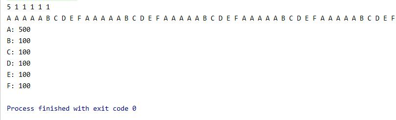
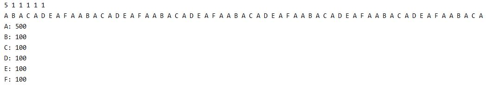

<!DOCTYPE html>
<html lang="zh-Hans">
<head><meta name="generator" content="Hexo 3.9.0">

    <!--[if lt IE 9]>
        <style>body {display: none; background: none !important} </style>
        <meta http-equiv="Refresh" Content="0; url=//outdatedbrowser.com/" />
    <![endif]-->

<meta charset="utf-8">
<meta http-equiv="X-UA-Compatible" content="IE=edge, chrome=1">
<meta name="viewport" content="width=device-width, initial-scale=1, maximum-scale=1, user-scalable=no">
<meta name="format-detection" content="telephone=no">
<meta name="author" content="IntoTw">


<meta name="description" content="主要描述了带权重的轮询负载均衡算法以及其实现">
<meta name="keywords" content="分布式,Java,spring cloud">
<meta property="og:type" content="article">
<meta property="og:title" content="负载均衡算法">
<meta property="og:url" content="https://github.com/IntoTw/2020/04/21/负载均衡算法/index.html">
<meta property="og:site_name" content="IntoTw&#39; blog">
<meta property="og:description" content="主要描述了带权重的轮询负载均衡算法以及其实现">
<meta property="og:locale" content="zh-Hans">
<meta property="og:image" content="https://github.com/IntoTw/2020/04/21/负载均衡算法/image1.jpg">
<meta property="og:image" content="https://github.com/IntoTw/2020/04/21/负载均衡算法/image2.jpg">
<meta property="og:updated_time" content="2020-04-21T11:52:55.548Z">
<meta name="twitter:card" content="summary">
<meta name="twitter:title" content="负载均衡算法">
<meta name="twitter:description" content="主要描述了带权重的轮询负载均衡算法以及其实现">
<meta name="twitter:image" content="https://github.com/IntoTw/2020/04/21/负载均衡算法/image1.jpg">

<link rel="apple-touch-icon" href="/apple-touch-icon.png">


    <link rel="alternate" href="/atom.xml" title="IntoTw&#39; blog" type="application/atom+xml">


    <link rel="shortcut icon" href="/favicon.png">


    <link href="//cdn.bootcss.com/animate.css/3.5.1/animate.min.css" rel="stylesheet">


    <link href="//cdn.bootcss.com/fancybox/2.1.5/jquery.fancybox.min.css" rel="stylesheet">


    <script src="//cdn.bootcss.com/pace/1.0.2/pace.min.js"></script>
    <link href="//cdn.bootcss.com/pace/1.0.2/themes/blue/pace-theme-minimal.css" rel="stylesheet">


<link rel="stylesheet" href="/css/style.css">


<link href="//cdn.bootcss.com/font-awesome/4.6.3/css/font-awesome.min.css" rel="stylesheet">


<title>负载均衡算法 | IntoTw&#39; blog</title>

<script src="//cdn.bootcss.com/jquery/2.2.4/jquery.min.js"></script>
<script src="//cdn.bootcss.com/clipboard.js/1.5.10/clipboard.min.js"></script>

<script>
    var yiliaConfig = {
        fancybox: true,
        animate: true,
        isHome: false,
        isPost: true,
        isArchive: false,
        isTag: false,
        isCategory: false,
        fancybox_js: "//cdn.bootcss.com/fancybox/2.1.5/jquery.fancybox.min.js",
        scrollreveal: "//cdn.bootcss.com/scrollReveal.js/3.1.4/scrollreveal.min.js",
        search: true
    }
</script>


    <script> yiliaConfig.jquery_ui = [false]; </script>


    <script> yiliaConfig.rootUrl = "\/";</script>


</head></html>
<body>
  <div id="container">
    <div class="left-col">
    <div class="overlay"></div>
<div class="intrude-less">
    <header id="header" class="inner">
        <a href="/" class="profilepic">
            
        </a>
        <hgroup>
          <h1 class="header-author"><a href="/">IntoTw</a></h1>
        </hgroup>

        

        
            <form id="search-form">
            <input type="text" id="local-search-input" name="q" placeholder="search..." class="search form-control" autocomplete="off" autocorrect="off" searchonload="" />
            <i class="fa fa-times" onclick="resetSearch()"></i>
            </form>
            <div id="local-search-result"></div>
            <p class='no-result'>No results found <i class='fa fa-spinner fa-pulse'></i></p>
        


        
            <div id="switch-btn" class="switch-btn">
                <div class="icon">
                    <div class="icon-ctn">
                        <div class="icon-wrap icon-house" data-idx="0">
                            <div class="birdhouse"></div>
                            <div class="birdhouse_holes"></div>
                        </div>
                        <div class="icon-wrap icon-ribbon hide" data-idx="1">
                            <div class="ribbon"></div>
                        </div>
                        
                        <div class="icon-wrap icon-link hide" data-idx="2">
                            <div class="loopback_l"></div>
                            <div class="loopback_r"></div>
                        </div>
                        
                        
                        <div class="icon-wrap icon-me hide" data-idx="3">
                            <div class="user"></div>
                            <div class="shoulder"></div>
                        </div>
                        
                    </div>
                    
                </div>
                <div class="tips-box hide">
                    <div class="tips-arrow"></div>
                    <ul class="tips-inner">
                        <li>菜单</li>
                        <li>标签</li>
                        
                        <li>友情链接</li>
                        
                        
                        <li>关于我</li>
                        
                    </ul>
                </div>
            </div>
        

        <div id="switch-area" class="switch-area">
            <div class="switch-wrap">
                <section class="switch-part switch-part1">
                    <nav class="header-menu">
                        <ul>
                        
                            <li><a href="/">主页</a></li>
                        
                            <li><a href="/archives/">所有文章</a></li>
                        
                            <li><a href="/tags/">标签云</a></li>
                        
                            <li><a href="/about/">关于我</a></li>
                        
                        </ul>
                    </nav>
                    <nav class="header-nav">
                        <ul class="social">
                            
                                <a class="fa Email" href="mailto:123@123.com" title="Email"></a>
                            
                                <a class="fa GitHub" href="#" title="GitHub"></a>
                            
                                <a class="fa RSS" href="/atom.xml" title="RSS"></a>
                            
                        </ul>
                    </nav>
                </section>
                
                
                <section class="switch-part switch-part2">
                    <div class="widget tagcloud" id="js-tagcloud">
                        <ul class="tag-list"><li class="tag-list-item"><a class="tag-list-link" href="/tags/Git/">Git</a></li><li class="tag-list-item"><a class="tag-list-link" href="/tags/Java/">Java</a></li><li class="tag-list-item"><a class="tag-list-link" href="/tags/Scheduled/">Scheduled</a></li><li class="tag-list-item"><a class="tag-list-link" href="/tags/SpringBoot/">SpringBoot</a></li><li class="tag-list-item"><a class="tag-list-link" href="/tags/WebSocket/">WebSocket</a></li><li class="tag-list-item"><a class="tag-list-link" href="/tags/git/">git</a></li><li class="tag-list-item"><a class="tag-list-link" href="/tags/leetcode/">leetcode</a></li><li class="tag-list-item"><a class="tag-list-link" href="/tags/spring-cloud/">spring cloud</a></li><li class="tag-list-item"><a class="tag-list-link" href="/tags/xxl-job/">xxl-job</a></li><li class="tag-list-item"><a class="tag-list-link" href="/tags/分布式/">分布式</a></li><li class="tag-list-item"><a class="tag-list-link" href="/tags/分布式系统/">分布式系统</a></li><li class="tag-list-item"><a class="tag-list-link" href="/tags/定时任务调度/">定时任务调度</a></li><li class="tag-list-item"><a class="tag-list-link" href="/tags/算法/">算法</a></li><li class="tag-list-item"><a class="tag-list-link" href="/tags/编译期注解/">编译期注解</a></li><li class="tag-list-item"><a class="tag-list-link" href="/tags/运维相关/">运维相关</a></li><li class="tag-list-item"><a class="tag-list-link" href="/tags/随笔/">随笔</a></li></ul>
                    </div>
                </section>
                
                
                
                <section class="switch-part switch-part3">
                    <div id="js-friends">
                    
                      <a class="main-nav-link switch-friends-link" href="https://hexo.io">Hexo</a>
                    
                      <a class="main-nav-link switch-friends-link" href="https://pages.github.com/">GitHub</a>
                    
                      <a class="main-nav-link switch-friends-link" href="http://moxfive.xyz/">MOxFIVE</a>
                    
                    </div>
                </section>
                

                
                
                <section class="switch-part switch-part4">
                
                    <div id="js-aboutme">专注于前端</div>
                </section>
                
            </div>
        </div>
    </header>                
</div>
    </div>
    <div class="mid-col">
      <nav id="mobile-nav">
      <div class="overlay">
          <div class="slider-trigger"></div>
          <h1 class="header-author js-mobile-header hide"><a href="/" title="回到主页">IntoTw</a></h1>
      </div>
    <div class="intrude-less">
        <header id="header" class="inner">
            <a href="/" class="profilepic">
                
            </a>
            <hgroup>
              <h1 class="header-author"><a href="/" title="回到主页">IntoTw</a></h1>
            </hgroup>
            
            <nav class="header-menu">
                <ul>
                
                    <li><a href="/">主页</a></li>
                
                    <li><a href="/archives/">所有文章</a></li>
                
                    <li><a href="/tags/">标签云</a></li>
                
                    <li><a href="/about/">关于我</a></li>
                
                <div class="clearfix"></div>
                </ul>
            </nav>
            <nav class="header-nav">
                        <ul class="social">
                            
                                <a class="fa Email" target="_blank" href="mailto:123@123.com" title="Email"></a>
                            
                                <a class="fa GitHub" target="_blank" href="#" title="GitHub"></a>
                            
                                <a class="fa RSS" target="_blank" href="/atom.xml" title="RSS"></a>
                            
                        </ul>
            </nav>
        </header>                
    </div>
    <link class="menu-list" tags="标签" friends="友情链接" about="关于我"/>
</nav>
      <div class="body-wrap"><article id="post-负载均衡算法" class="article article-type-post" itemscope itemprop="blogPost">
  
    <div class="article-meta">
      <a href="/2020/04/21/负载均衡算法/" class="article-date">
      <time datetime="2020-04-21T11:10:36.000Z" itemprop="datePublished">2020-04-21</time>
</a>


    </div>
  
  <div class="article-inner">
    
      <input type="hidden" class="isFancy" />
    
    
      <header class="article-header">
        
  
    <h1 class="article-title" itemprop="name">
      负载均衡算法
    </h1>
  

      </header>
      
      <div class="article-info article-info-post">
        
    <div class="article-category tagcloud">
    <a class="article-category-link" href="/categories/Java/">Java</a>
    </div>


        
    <div class="article-tag tagcloud">
        <ul class="article-tag-list"><li class="article-tag-list-item"><a class="article-tag-list-link" href="/tags/Java/">Java</a></li><li class="article-tag-list-item"><a class="article-tag-list-link" href="/tags/spring-cloud/">spring cloud</a></li><li class="article-tag-list-item"><a class="article-tag-list-link" href="/tags/分布式/">分布式</a></li></ul>
    </div>

        <div class="clearfix"></div>
      </div>
      
    
    <div class="article-entry" itemprop="articleBody">
      
          
        <h2 id="负载均衡算法"><a href="#负载均衡算法" class="headerlink" title="负载均衡算法"></a>负载均衡算法</h2><p>&#160; &#160; &#160; &#160;负载均衡算法，一般在分布式场景的中大量使用，负载均衡一般分为调用方负载均衡，和服务方负载均衡，spring cloud中的ribbon就是使用的调用方负载均衡，而通过nginx的配置来进行负载均衡，明显更像是服务端的负载均衡。但是原理是一致的，算法的目的就是在一个服务器集合中，选择其中一个合适的服务器，进行请求的处理。<br>&#160; &#160; &#160; &#160;常见的负载均衡算法包括：随机，轮询，最小压力，哈希。主要为这几大类，其中各自有如带权重的实现，一致性哈希等更好的算法。<br>&#160; &#160; &#160; &#160;这篇文章起源于接手了公司的另一个组的一个cloud项目，是一个架构搭的，所以仔细看了一遍，看到了基于ribbon的带权重轮询算法实现，一开始看了好久不知道在干什么，补充了相关知识后豁然开朗，于是对这2种算法做一个总结和记录，本文主要描述带权重的轮询算法以及平滑的带权重轮询算法的原理以及实现。</p>
<h2 id="带权重的轮询负载均衡算法"><a href="#带权重的轮询负载均衡算法" class="headerlink" title="带权重的轮询负载均衡算法"></a>带权重的轮询负载均衡算法</h2><p>&#160; &#160; &#160; &#160;轮询负载均衡即在所有服务之间，依次选择每个服务，若服务器有A、B、C、D、E，则调度顺序必定为A、B、C、D、E、A、B、C、D……的循环。<strong>带权重的轮询</strong>即为在轮询的基础上，考虑每个服务的权重，如服务器A、B、C、D、E对应权重{5,1,1,1,1}，一般来说在某总权重(5+1+1+1+1)=9次调度内调度顺序就为AAAAABCDE。<br>&#160; &#160; &#160; &#160;该算法可以很简单的实现，只需要每次选取后将权重-1，直到总权重为0，重置权重数组，即可完成处理。代码如下</p>
<figure class="highlight go"><table><tr><td class="gutter"><pre><span class="line">1</span><br><span class="line">2</span><br><span class="line">3</span><br><span class="line">4</span><br><span class="line">5</span><br><span class="line">6</span><br><span class="line">7</span><br><span class="line">8</span><br><span class="line">9</span><br><span class="line">10</span><br><span class="line">11</span><br><span class="line">12</span><br><span class="line">13</span><br><span class="line">14</span><br><span class="line">15</span><br><span class="line">16</span><br><span class="line">17</span><br><span class="line">18</span><br><span class="line">19</span><br><span class="line">20</span><br><span class="line">21</span><br><span class="line">22</span><br><span class="line">23</span><br><span class="line">24</span><br><span class="line">25</span><br><span class="line">26</span><br><span class="line">27</span><br><span class="line">28</span><br><span class="line">29</span><br><span class="line">30</span><br><span class="line">31</span><br><span class="line">32</span><br><span class="line">33</span><br><span class="line">34</span><br><span class="line">35</span><br><span class="line">36</span><br><span class="line">37</span><br></pre></td><td class="code"><pre><span class="line"><span class="function"><span class="keyword">func</span> <span class="title">doSimpleWeightBound</span><span class="params">(servers []Server,initWeight []<span class="keyword">int</span>)</span></span>&#123;</span><br><span class="line">	res:=list.New()</span><br><span class="line">	weight:=<span class="built_in">make</span>([]<span class="keyword">int</span>,<span class="built_in">len</span>(initWeight))</span><br><span class="line">	count:=<span class="built_in">make</span>([]<span class="keyword">int</span>, <span class="built_in">len</span>(weight))</span><br><span class="line">	totalWeight:=<span class="number">0</span></span><br><span class="line">	<span class="keyword">for</span> i := <span class="number">0</span>; i&lt; <span class="built_in">len</span>(initWeight);i++  &#123;</span><br><span class="line">		totalWeight+=initWeight[i]</span><br><span class="line">	&#125;</span><br><span class="line">	<span class="built_in">copy</span>(weight,initWeight)</span><br><span class="line">    nowWeight:=totalWeight</span><br><span class="line">    <span class="comment">//一共做totalWeight*100次，查看结果。</span></span><br><span class="line">	<span class="keyword">for</span> i := <span class="number">0</span>; i &lt; totalWeight*<span class="number">100</span>; i++ &#123;</span><br><span class="line">		<span class="comment">//1. 选出当前权重最高的机器</span></span><br><span class="line">		position:=selectHighWeight(weight)</span><br><span class="line">		count[position]++</span><br><span class="line">		res.PushBack(servers[position].name)</span><br><span class="line">		<span class="comment">//2. 选出的机器权重数减1</span></span><br><span class="line">		weight[position]--</span><br><span class="line">		<span class="comment">//3. 总权重减1</span></span><br><span class="line">		nowWeight--</span><br><span class="line">		<span class="keyword">if</span>(nowWeight&lt;=<span class="number">0</span>)&#123;</span><br><span class="line">			<span class="built_in">copy</span>(weight,initWeight)</span><br><span class="line">			nowWeight=totalWeight</span><br><span class="line">		&#125;</span><br><span class="line">	&#125;</span><br><span class="line">	<span class="keyword">for</span> i :=<span class="number">0</span>; i &lt; <span class="built_in">len</span>(weight); i ++ &#123;</span><br><span class="line">		fmt.Printf(<span class="string">"%d "</span>,weight[i])</span><br><span class="line">	&#125;</span><br><span class="line">	fmt.Println()</span><br><span class="line">	<span class="keyword">for</span> i := res.Front(); i != <span class="literal">nil</span>; i = i.Next() &#123;</span><br><span class="line">		fmt.Printf(<span class="string">"%s "</span>,i.Value)</span><br><span class="line">	&#125;</span><br><span class="line">	fmt.Println()</span><br><span class="line">	<span class="keyword">for</span> i :=<span class="number">0</span>; i &lt; <span class="built_in">len</span>(count); i ++ &#123;</span><br><span class="line">		fmt.Printf(<span class="string">"%s: %d\n"</span>,<span class="keyword">string</span>(<span class="string">'A'</span>+i),count[i])</span><br><span class="line">	&#125;</span><br><span class="line">&#125;</span><br></pre></td></tr></table></figure>

<p>&#160; &#160; &#160; &#160;代码执行结果如下：<br><br>可以看到，执行结果在带权综合次数内，分布为AAAAABCDE。</p>
<h2 id="平滑带权重的轮询负载均衡算法"><a href="#平滑带权重的轮询负载均衡算法" class="headerlink" title="平滑带权重的轮询负载均衡算法"></a>平滑带权重的轮询负载均衡算法</h2><p>&#160; &#160; &#160; &#160;带权重的轮询负载均衡算法存在一个问题，即在权重相差很大时，连续的调用在A机器上过于频繁，即使带权重的目的本身就是让权重大的机器处理更多请求，但显然让连续的调用更加平均分散在各台机器上更好。<br>&#160; &#160; &#160; &#160;该算法的实现参照nginx开发者提供的思路，进行如下步骤：</p>
<ol>
<li>建立两个数组，initWeight记录初始各机器的权重，weight记录过程中的权重。</li>
<li>求得初始总权重totalWeight。</li>
<li>从各机器中选出当前权重weight最高的一台机器S1。</li>
<li>S1对应的当前权重减去总权重totalWeight。</li>
<li>每台机器的当前权重weight[i]依次增加各机器初始的权重initWeight[i]</li>
<li>重复3-5步骤。<figure class="highlight go"><table><tr><td class="gutter"><pre><span class="line">1</span><br><span class="line">2</span><br><span class="line">3</span><br><span class="line">4</span><br><span class="line">5</span><br><span class="line">6</span><br><span class="line">7</span><br><span class="line">8</span><br><span class="line">9</span><br><span class="line">10</span><br><span class="line">11</span><br><span class="line">12</span><br><span class="line">13</span><br><span class="line">14</span><br><span class="line">15</span><br><span class="line">16</span><br><span class="line">17</span><br><span class="line">18</span><br><span class="line">19</span><br><span class="line">20</span><br><span class="line">21</span><br><span class="line">22</span><br><span class="line">23</span><br><span class="line">24</span><br><span class="line">25</span><br><span class="line">26</span><br><span class="line">27</span><br><span class="line">28</span><br><span class="line">29</span><br><span class="line">30</span><br><span class="line">31</span><br><span class="line">32</span><br><span class="line">33</span><br><span class="line">34</span><br></pre></td><td class="code"><pre><span class="line"><span class="function"><span class="keyword">func</span> <span class="title">doSmoothlyWeightBound</span><span class="params">(servers []Server,initWeight []<span class="keyword">int</span>)</span></span>&#123;</span><br><span class="line">	<span class="comment">//一共做30次，分别看选出的是哪台机器。</span></span><br><span class="line">	res:=list.New()</span><br><span class="line">	weight:=<span class="built_in">make</span>([]<span class="keyword">int</span>,<span class="built_in">len</span>(initWeight))</span><br><span class="line">	count:=<span class="built_in">make</span>([]<span class="keyword">int</span>, <span class="built_in">len</span>(weight))</span><br><span class="line">	totalWeight:=<span class="number">0</span></span><br><span class="line">	<span class="keyword">for</span> i := <span class="number">0</span>; i&lt; <span class="built_in">len</span>(initWeight);i++  &#123;</span><br><span class="line">		totalWeight+=initWeight[i]</span><br><span class="line">	&#125;</span><br><span class="line">	<span class="built_in">copy</span>(weight,initWeight)</span><br><span class="line">	<span class="keyword">for</span> i := <span class="number">0</span>; i &lt; totalWeight*<span class="number">8</span>; i++ &#123;</span><br><span class="line">		<span class="comment">//1. 选出当前权重最高的机器</span></span><br><span class="line">		position:=selectHighWeight(weight)</span><br><span class="line">		count[position]++</span><br><span class="line">		res.PushBack(servers[position].name)</span><br><span class="line">		<span class="comment">//2. 选出的机器减去总权重</span></span><br><span class="line">		weight[position]-=totalWeight</span><br><span class="line">		<span class="comment">//3. 对每台机器，增加初始权重</span></span><br><span class="line">		<span class="keyword">for</span> j := <span class="number">0</span>; j &lt; <span class="built_in">len</span>(weight); j++ &#123;</span><br><span class="line">			weight[j]+=initWeight[j]</span><br><span class="line">		&#125;</span><br><span class="line">	&#125;</span><br><span class="line">	<span class="keyword">for</span> i :=<span class="number">0</span>; i &lt; <span class="built_in">len</span>(weight); i ++ &#123;</span><br><span class="line">		fmt.Printf(<span class="string">"%d "</span>,weight[i])</span><br><span class="line">	&#125;</span><br><span class="line">	fmt.Println()</span><br><span class="line">	<span class="keyword">for</span> i := res.Front(); i != <span class="literal">nil</span>; i = i.Next() &#123;</span><br><span class="line">		fmt.Printf(<span class="string">"%s "</span>,i.Value)</span><br><span class="line">	&#125;</span><br><span class="line">	fmt.Println()</span><br><span class="line">	<span class="keyword">for</span> i :=<span class="number">0</span>; i &lt; <span class="built_in">len</span>(count); i ++ &#123;</span><br><span class="line">		fmt.Printf(<span class="string">"%s: %d\n"</span>,<span class="keyword">string</span>(<span class="string">'A'</span>+i),count[i])</span><br><span class="line">	&#125;</span><br><span class="line">&#125;</span><br></pre></td></tr></table></figure>

</li>
</ol>
<p>&#160; &#160; &#160; &#160;代码执行结果如下：<br><br>&#160; &#160; &#160; &#160;可以看到，执行结果在带权综合次数内，总次数满足权重比例，且顺序不再是纯粹的连续顺序。</p>
<h3 id="缺点"><a href="#缺点" class="headerlink" title="缺点"></a>缺点</h3><p>&#160; &#160; &#160; &#160;该算法的缺点也很明显，每次总权重周期内的顺序必定是相同的，实际上在服务与权重不变的情况下，只要生成一次顺序，以后就按照顺序去轮询即可，不需要维护计算。</p>
<h2 id="思考"><a href="#思考" class="headerlink" title="思考"></a>思考</h2><h3 id="如何在服务列表变化的情况下，执行算法？"><a href="#如何在服务列表变化的情况下，执行算法？" class="headerlink" title="如何在服务列表变化的情况下，执行算法？"></a>如何在服务列表变化的情况下，执行算法？</h3><p>&#160; &#160; &#160; &#160;以上算法的实现非常明显的只考虑到了在服务列表以及权重不变的情况下，进行多次选择。但是如果感知到服务列表或者权重比例变化的情况下，该如何处理呢？<br>&#160; &#160; &#160; &#160;通过过程可以发现，算法主要依赖的就是初始权重以及服务列表，在感知到服务列表变化时，应通过一些同步机制，及时的更新正在进行选择时的服务列表以及权重比例，及时重新计算相关数组以及总权重数。具体可容忍什么程度的一致性，就用什么同步方式去更新。</p>
<h2 id="总结"><a href="#总结" class="headerlink" title="总结"></a>总结</h2><p>&#160; &#160; &#160; &#160;通过看高手的代码以及实现，深入了解了一部分知识点。</p>

      
    </div>
    
  </div>
  
    
    <div class="copyright">
        <p><span>本文标题:</span><a href="/2020/04/21/负载均衡算法/">负载均衡算法</a></p>
        <p><span>文章作者:</span><a href="/" title="回到主页">IntoTw</a></p>
        <p><span>发布时间:</span>2020-04-21, 19:10:36</p>
        <p><span>最后更新:</span>2020-04-21, 19:52:55</p>
        <p>
            <span>原始链接:</span><a class="post-url" href="/2020/04/21/负载均衡算法/" title="负载均衡算法">https://github.com/IntoTw/2020/04/21/负载均衡算法/</a>
            <span class="copy-path" data-clipboard-text="原文: https://github.com/IntoTw/2020/04/21/负载均衡算法/　　作者: IntoTw" title="点击复制文章链接"><i class="fa fa-clipboard"></i></span>
            <script> var clipboard = new Clipboard('.copy-path'); </script>
        </p>
        <p>
            <span>许可协议:</span><i class="fa fa-creative-commons"></i> <a rel="license" href="http://creativecommons.org/licenses/by-nc-sa/4.0/" title="CC BY-NC-SA 4.0 International" target = "_blank">"署名-非商用-相同方式共享 4.0"</a> 转载请保留原文链接及作者。
        </p>
    </div>


    <nav id="article-nav">
        
        
            <div id="article-nav-older" class="article-nav-title">
                <a href="/2020/04/01/leetcode刷题记录-1395/">
                    leetcode刷题录-1395
                </a>
            </div>
        
    </nav>

  
</article>

    <div id="toc" class="toc-article">
        <strong class="toc-title">文章目录</strong>
        
            <ol class="toc"><li class="toc-item toc-level-2"><a class="toc-link" href="#负载均衡算法"><span class="toc-number">1.</span> <span class="toc-text">负载均衡算法</span></a></li><li class="toc-item toc-level-2"><a class="toc-link" href="#带权重的轮询负载均衡算法"><span class="toc-number">2.</span> <span class="toc-text">带权重的轮询负载均衡算法</span></a></li><li class="toc-item toc-level-2"><a class="toc-link" href="#平滑带权重的轮询负载均衡算法"><span class="toc-number">3.</span> <span class="toc-text">平滑带权重的轮询负载均衡算法</span></a><ol class="toc-child"><li class="toc-item toc-level-3"><a class="toc-link" href="#缺点"><span class="toc-number">3.1.</span> <span class="toc-text">缺点</span></a></li></ol></li><li class="toc-item toc-level-2"><a class="toc-link" href="#思考"><span class="toc-number">4.</span> <span class="toc-text">思考</span></a><ol class="toc-child"><li class="toc-item toc-level-3"><a class="toc-link" href="#如何在服务列表变化的情况下，执行算法？"><span class="toc-number">4.1.</span> <span class="toc-text">如何在服务列表变化的情况下，执行算法？</span></a></li></ol></li><li class="toc-item toc-level-2"><a class="toc-link" href="#总结"><span class="toc-number">5.</span> <span class="toc-text">总结</span></a></li></ol>
        
    </div>
    <style>
        .left-col .switch-btn,
        .left-col .switch-area {
            display: none;
        }
        .toc-level-3 i,
        .toc-level-3 ol {
            display: none !important;
        }
    </style>

    <input type="button" id="tocButton" value="隐藏目录"  title="点击按钮隐藏或者显示文章目录">

    <script>
        yiliaConfig.toc = ["隐藏目录", "显示目录", !!"false"];
    </script>


    
<div class="share">
    
        <div class="bdsharebuttonbox">
            <a href="#" class="fa fa-twitter bds_twi" data-cmd="twi" title="分享到推特"></a>
            <a href="#" class="fa fa-weibo bds_tsina" data-cmd="tsina" title="分享到新浪微博"></a>
            <a href="#" class="fa fa-qq bds_sqq" data-cmd="sqq" title="分享给 QQ 好友"></a>
            <a href="#" class="fa fa-files-o bds_copy" data-cmd="copy" title="复制网址"></a>
            <a href="#" class="fa fa fa-envelope-o bds_mail" data-cmd="mail" title="通过邮件分享"></a>
            <a href="#" class="fa fa-weixin bds_weixin" data-cmd="weixin" title="生成文章二维码"></a>
            <a href="#" class="fa fa-share-alt bds_more" data-cmd="more"></i></a>
        </div>
        <script>
            window._bd_share_config={
                "common":{"bdSnsKey":{},"bdText":"负载均衡算法　| IntoTw' blog　","bdMini":"2","bdMiniList":false,"bdPic":"","bdStyle":"0","bdSize":"24"},"share":{}};with(document)0[(getElementsByTagName('head')[0]||body).appendChild(createElement('script')).src='http://bdimg.share.baidu.com/static/api/js/share.js?v=89860593.js?cdnversion='+~(-new Date()/36e5)];
        </script>
    

    
</div>


    


    <div class="scroll" id="post-nav-button">
        
            <a href="/" title="回到主页"><i class="fa fa-home"></i></a>
        

        <a title="文章列表"><i class="fa fa-bars"></i><i class="fa fa-times"></i></a>

        
            <a href="/2020/04/01/leetcode刷题记录-1395/" title="下一篇: leetcode刷题录-1395">
                <i class="fa fa-angle-right"></i>
            </a>
        
    </div>

    <ul class="post-list"><li class="post-list-item"><a class="post-list-link" href="/2020/04/21/负载均衡算法/">负载均衡算法</a></li><li class="post-list-item"><a class="post-list-link" href="/2020/04/01/leetcode刷题记录-1395/">leetcode刷题录-1395</a></li><li class="post-list-item"><a class="post-list-link" href="/2020/03/09/Java编译期注解处理器详细使用方法/">Java编译期注解处理器详细使用方法</a></li><li class="post-list-item"><a class="post-list-link" href="/2020/01/02/KeepAlive安装以及简单配置/">KeepAlive安装以及简单配置</a></li><li class="post-list-item"><a class="post-list-link" href="/2019/12/31/Spring Boot WebSocket技术/">SpringBoot WebSocket技术</a></li><li class="post-list-item"><a class="post-list-link" href="/2019/12/31/xxl-job较深入使用/">xxl-job较深入使用</a></li><li class="post-list-item"><a class="post-list-link" href="/2019/07/03/Spring-Boot-Scheduled定时任务特性/">Spring Boot Scheduled定时任务特性</a></li><li class="post-list-item"><a class="post-list-link" href="/2019/06/27/不继续使用CSDN的原因/">不继续使用CSDN的原因</a></li><li class="post-list-item"><a class="post-list-link" href="/2019/06/27/Git使用详解/">Git使用详解</a></li></ul>


    <script>
        
    </script>
</div>
      <footer id="footer">
    <div class="outer">
        <div id="footer-info">
            <div class="footer-left">
                <i class="fa fa-copyright"></i> 
                2016-2020 IntoTw
            </div>
            <div class="footer-right">
                <a href="http://hexo.io/" target="_blank" title="快速、简洁且高效的博客框架">Hexo</a>  Theme <a href="https://github.com/MOxFIVE/hexo-theme-yelee" target="_blank" title="简而不减 Hexo 双栏博客主题  v3.5">Yelee</a> by MOxFIVE <i class="fa fa-heart animated infinite pulse"></i>
            </div>
        </div>
        
            <div class="visit">
                
                    <span id="busuanzi_container_site_pv" style='display:none'>
                        <span id="site-visit" title="本站到访数"><i class="fa fa-user" aria-hidden="true"></i><span id="busuanzi_value_site_uv"></span>
                        </span>
                    </span>
                
                
                    <span>| </span>
                
                
                    <span id="busuanzi_container_page_pv" style='display:none'>
                        <span id="page-visit"  title="本页阅读量"><i class="fa fa-eye animated infinite pulse" aria-hidden="true"></i><span id="busuanzi_value_page_pv"></span>
                        </span>
                    </span>
                
            </div>
        
    </div>
</footer>
    </div>
    
<script data-main="/js/main.js" src="//cdn.bootcss.com/require.js/2.2.0/require.min.js"></script>

    <script>
        $(document).ready(function() {
            var iPad = window.navigator.userAgent.indexOf('iPad');
            if (iPad > -1 || $(".left-col").css("display") === "none") {
                var bgColorList = ["#9db3f4", "#414141", "#e5a859", "#f5dfc6", "#c084a0", "#847e72", "#cd8390", "#996731"];
                var bgColor = Math.ceil(Math.random() * (bgColorList.length - 1));
                $("body").css({"background-color": bgColorList[bgColor], "background-size": "cover"});
            }
            else {
                var backgroundnum = 5;
                var backgroundimg = "url(/background/bg-x.jpg)".replace(/x/gi, Math.ceil(Math.random() * backgroundnum));
                $("body").css({"background": backgroundimg, "background-attachment": "fixed", "background-size": "cover"});
            }
        })
    </script>


<div class="scroll" id="scroll">
    <a href="#" title="返回顶部"><i class="fa fa-arrow-up"></i></a>
    <a href="#comments" onclick="load$hide();" title="查看评论"><i class="fa fa-comments-o"></i></a>
    <a href="#footer" title="转到底部"><i class="fa fa-arrow-down"></i></a>
</div>
<script>
    // Open in New Window
    
        var oOpenInNew = {
            
            
            
            
            
            
             archives: ".archive-article-title", 
             miniArchives: "a.post-list-link", 
            
             friends: "#js-friends a", 
             socail: ".social a" 
        }
        for (var x in oOpenInNew) {
            $(oOpenInNew[x]).attr("target", "_blank");
        }
    
</script>

<script async src="https://dn-lbstatics.qbox.me/busuanzi/2.3/busuanzi.pure.mini.js">
</script>
  </div>
</body>
</html>